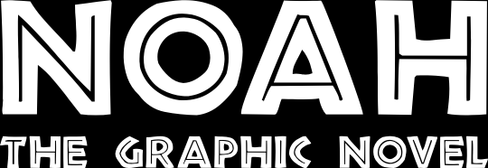

Production Notes
Production Notes
This project is effectively cancelled. Optimistically, on indefinet hold
as we would love to come back to it. The implied by the poster concept
were just so compelling—and this started in 2008; 4 years before
the Aronofsky's Noah was annonced—that it naturally led us
to ponder the story behind it.
It seemed rich ground and after the posters where done in 2011, A good
chunk of time was spent in 2012 developing the concept in my mind and
starting to put together plans for a Kickstarter campaign.
Through some combination of perfectionism and plain old 'not enough
time', the project was halted. Then when the trailers for
Aronofsky's Noah came out we could only think "It looks great,
but the lack of dinosaurs ruins it." It seemed inconceivable that the
market wouldn't agree and the site was refreshed and we hashed out a
simplified plan to develop the property, but after reviewing the
existing projects on Kickstarter, we just couldn't pull the trigger.
The problem was one of credibility in our own mind. There's just too
much unknown and we felt that we really needed to flesh out the script,
get a firmer page count, and get a couple of pages of test art before
launching a campaign. We just weren't comfortable asking people to fork
over money for 'just the idea'.
As time and money permit, we do hope to return to this one day. Rough in
more of the script and get a handful of finished pages. A first chapter
perhaps done. At that point, we could legitimately promise the backers:
"Yes, this will be done, and here's what you'll be getting."
That is of course if no one else hits on the brilliant idea of greatest
disaster movie of all time... plus Jurrasic Park. Like the best
ice cream with the most delicious cherry of all time on top. Honestly,
we're constantly surprised that no one's beaten us to the punch yet on
this one.